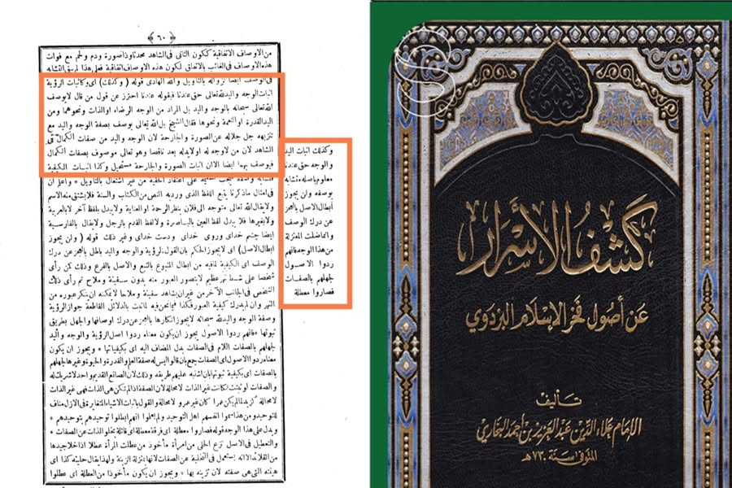

দেহবাদি আকিদাহ যখন হানাফি মাজহাবে— (১)
১৮ জুলাই, ২০২৩
দেহবাদি আকিদাহ যখন হানাফি মাজহাবে— (১)
কোরআন ও হাদিসে বর্ণিত মহান আল্লাহর সিফাত সাব্যস্ত করার অপরাধে(?) কালামি ভাইয়েরা আমাদের দেহবাদি ট্যাগ দেন রাতদিন। অথচ, ইমাম আবু হানিফা রাহ. ইসবাতের আকিদাহ রাখতেন, যা তাঁর কিতাবে সুস্পষ্ট এসেছে। (এ আলোচনা পূর্বে অতিবাহিত হয়েছে।)
এবার আমরা ধারাবাহিক কিছু মুহাক্কিক হানাফি ইমামের বক্তব্য সামনে আনব, যারা ইসবাতের আকিদাহ রাখতেন। ইসবাতের আকিদাহকে সমর্থন করতেন এবং তা সালাফের আকিদাহ হওয়ার স্বীকৃতি দিতেন। তন্মধ্যে—
ইমাম ফখরুল ইসলাম আল-বাযদাবি রাহ. (৪০০-৪৮২ হি.) যিনি হানাফি মাজহাবের প্রথমসারির উসূলবিদ- নীতিনির্ধারকগণের অন্যতম। সর্বজনস্বীকৃত মুহাক্কিক। ইমাম ইবনু তাইমিয়া রাহ. থেকে প্রায় দুইশ বছর পূর্বের ইমাম। তিনি বলেন—
وكذلك إثبات اليد والوجه حق عندنا معلوم بأصله متشابه بوصفه، ولن يجوز إبطال الأصل بالعجز عن درك الوصف؛ وإنما ضلت المعتزلة من هذا الوجه، فإنهم ردوا الأصول لجهلهم بالصفات فصاروا معطلة.
অনুরূপভাবে (রু'ইয়াত সাব্যস্ত করার ন্যায়) হাত ও চেহারা সাব্যস্তকরণ আমাদের মতে সঠিক/জরুরি। তার আসল পরিজ্ঞাত। তবে ওস্ফ-বৈশিষ্ট্য সাদৃশ্যপূর্ণ বা অস্পষ্ট। বৈশিষ্ট্য (কাইফ) অনুধাবন করতে না পারায় আসলকে বাতিল করে দেয়া কখনোই বৈধ হবে না। বস্তুত, মু'তাযিলারা এ দিক থেকে পথভ্রষ্ট হয়েছে। কারণ, তারা (হাত, চেহারা প্রভৃতির) বৈশিষ্ট্য সম্পর্কে অজ্ঞতার কারণে আসলকেই প্রত্যাখ্যান করে বসেছে। ফলে তারা (আল্লাহর সিফাত) নিষ্ক্রিয়কারীতে পরিণত হয়েছে। [সূত্র: উসূলে বাযদাবি-১০]
অতঃপর এ কিতাবের ব্যাখ্যা করেছেন আরেক হানাফি বিশিষ্ট ইমাম আলাউদ্দিন আব্দুল আজিজ আল-বুখারি রাহ. (মৃত্যু- ৭৩০ হি.)। তিনি বলেন—
قوله (وكذلك) أي وكإثبات الرؤية إثبات الوجه واليد لله تعالى حق عندنا فبقوله عندنا احترز عن قول من قال لا يوصف الله تعالى سبحانه بالوجه واليد بل المراد من الوجه الرضاء أو الذات ونحوهما ومن اليد القدرة أو النعمة ونحوها فقال الشيخ: بل الله تعالى يوصف بصفة الوجه واليد مع تنزيهه ﷻ عن الصورة والجارحة؛ لأن الوجه واليد من صفات الكمال في الشاهد؛ لأن من لا وجه له أو لا يد يعد ناقصا، وهو تعالى موصوف بصفات الكمال فيوصف بهما أيضا.
তাঁর কথা, (অনুরূপভাবে) অর্থাৎ পরকালে আল্লাহর দর্শন সাব্যস্ত করার ন্যায় চেহারা ও হাত সাব্যস্ত করা আমাদের নিকট জরুরি। তিনি ‘আমাদের নিকট’ বলার মাধ্যমে ওদের (জাহমিয়াদের) কথা থেকে দূরে সরে এসেছেন, যারা বলে, মহান আল্লাহকে চেহারা ও হাতের বিশেষণে বিশেষায়িত করা যাবে না; বরং চেহারা দ্বারা উদ্দেশ্য সন্তুষ্টি, সত্তা বা এরকমকিছু। আর হাত দ্বারা উদ্দেশ্য ক্ষমতা বা নিয়ামত ইত্যাদি। শাইখ বলেন, বরঞ্চ আল্লাহকে চেহারা ও হাতের বিশেষণে বিশেষায়িত করা হবে। একইসঙ্গে, মহান আল্লাহকে আকৃতি ও অঙ্গ থেকে পবিত্র বলে ঘোষণা দিতে হবে। কারণ, দৃশ্যমান জগতে চেহারা ও হাত সিফাতে কামাল তথা পূর্ণতার গুণাবলিসমূহের অন্তর্ভুক্ত। কেননা যার চেহারা কিংবা হাত নেই, তাকে অপূর্ণাঙ্গ গণ্য করা হয়। আর তিনি হলেন পূর্ণতার গুণাবলিসমূহ দ্বারা গুণান্বিত। সুতরাং তাঁকে উভয় (চেহারা ও হাত) বিশেষণেও বিশেষায়িত করা হবে।
[কাশফুল আসরার আন উসূলিল বাযদাবি- ১/৬০]
এরপর ইমাম আলাউদ্দিন বুখারি রাহ. দীর্ঘ তাহকিক ও উদাহরণ পেশ করে মহান আল্লাহর সিফাত সাব্যস্ত করার প্রয়োজনীয়তা ও যৌক্তিকতা এমনভাবে তুলে ধরেছেন যে, কোনো অপব্যাখ্যার সুযোগ রাখেন নাই।
উভর ইমামের বক্তব্য থেকে দু'টি বিষয় পরিষ্কার হল—
(১) আল্লাহর সিফাতে খাবারিয়্যাহর (হাত, পা, চোখ, চেহারা) ইসবাত করাটা ওয়াজিব।
(২) ইসবাত না করে তাওয়িলের দ্বারস্থ হওয়া আহলে সুন্নাহ ওয়াল-জামাআতের মানহাজ নয়; বরং তা জাহমিয়া ও মু'তাযিলা সম্প্রদায়ের নীতি।
এখন কথা হচ্ছে, আল্লাহর চেহারা, হাত, পা ও চোখ সাব্যস্ত করার কারণে আমরা যদি দেহবাদি হই, তাহলে হানাফি মাজহাবের উসূলবিদ ইমাম বাযদাবি রাহ. ও ইমাম আব্দুল আজিজ বুখারির বিধান কী হবে? তারা-ও কি তবে দেহবাদি ছিলেন? কালামি ভাইদের থেকে জানার আগ্রহ রইল।
এরকম হানাফি ইমামগনের আরও বক্তব্য সামনে আসবে, ইনশাআল্লাহ। তখন আরও স্পষ্ট হবে যে, আমরা দেহবাদে জড়িয়েছি না কি উনারা মু'তাযিলিদের মাজহাব গ্রহণ করে তাদের সুরে সুর মিলিয়ে আমাদের অপবাদ দিচ্ছেন।
#দেহবাদি
